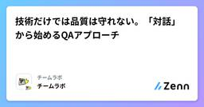

Zennの「QA」のフィード
フィード

技術だけでは品質は守れない。「対話」から始めるQAアプローチ
Zennの「QA」のフィード
こんにちは、チームラボでエンジニアをしている畠山です。現在は、QAエンジニアとして主にテスト管理に携わっています。今回は、チームラボでの開発を経験して得られた、品質保証に対する考え方や実体験ベースの気づきをお伝えできればと思います。標準化やテスト技術の壁にぶつかった失敗談を交えつつ、複数のプロジェクトで得られた現場での考え方をシェアできればと思います。 チームラボにおける開発特性と品質のあり方チームラボの開発は、ウォーターフォール形式でありながら、リリース直前まで顧客要望に合わせて仕様が変化する柔軟性を持つことが多いのです。この性質は様々なドメインで良いプロダクトを生...
2日前

5か月育てたQAのハーネスを棚卸しして、作り直すと決めた理由
Zennの「QA」のフィード
はじめにこんにちは！TOKIUMでQAチームのリーダーをしている西田です。前回までの記事(テスト設計の自動化[1]、テスト実行の実測[2]、そのグリーンは信じていいのか[3])で、QA業務の大部分をハーネス構造に落とし込み、自動でテストが回る環境を作りました。それから5か月、機能追加、不具合修正、テスト資産の供給が積み上がり、ハーネス（以降QAハーネスと呼びます）の守備範囲はかなり広くなりました。一方で、長期運用によって新たな問題が発生しました。ある日、メンバーから「テストケースを登録したのに、テスト資産に載っていない」という報告が来ました。しかしQAハーネスからは警告も...
2日前
[テスト] テスト計画書のテンプレート
Zennの「QA」のフィード
🌱 はじめに2026年8月27日に発売された『QAエンジニア入門 〜チームで品質を高める連携のしかた』（岩崎 駿 著、技術評論社）を読みました。第2章「2.2 テスト計画：目的と作成方法」の記述を参考に、テスト計画書のテンプレートとしてまとめます。https://gihyo.jp/book/2026/978-4-297-15832-3テスト計画をはじめて任されると、何をどこまで書けばよいのかが分かりません。そのまま埋めれば形になるように、Markdown のテンプレートとして用意しました。書くことを決めないままテストを始めると、次のような困り方をしがちです。「それもテ...
3日前

テストケースの「十分性」を LLM に判定させる ── QA Gauge を作った理由と、最初の失敗 2
2
Zennの「QA」のフィード
テストケース群が「十分か」を判定する仕組みを作っています。社内では QA Gauge と呼んでいます。テストケースを生成する AI ではなく、提出されたテストケース群に過不足がないかを判定する AI です。まだ「委譲できた」とは言えない段階なので、この記事はその実況の 1 本目になります。一言でいうと、QA の「判断」を LLM に委譲できるか。判定器そのものより先に、判定結果を評価する仕組みを作っている、という話です。 なぜ作ろうと思ったかきっかけは、QA の関与が局所的になっていることでした。QA チームが見られるのは依頼された案件だけで、本当は全案件に関与したい。ですが ...
8日前

# LLMでテスト設計の意図や根拠を残すのが大事な理由 — 人間には作った本人に聞けるが、LLMは残さないと後付けの説明しか返ってこない
Zennの「QA」のフィード
はじめにテストの根っこは、「なぜそのテストをするのか」の判断にあると考えています。技法を選ぶことも、値を決めることも、期待値を書くことも、その判断に続く作業です。LLMにテスト設計をさせると、テストケースは揃います。ところが、テストを選んだ理由は成果物から見えないことが多い。そしてレビューのためにコンテキスト（会話の履歴）を切ると、会話の中でだけ述べられていた理由は、レビューに届かなくなります。以前の記事「生成AIにどう根拠を残させるか — ハルシネーション対策の話」の続きとして、この理由をどう残すかを書きます。 「なぜそのテストをするのか」が根っこである理由テストは全部...
9日前
AIに「テストを書かせる」のをやめた｜QAプロセスごと渡して金銭系の大型施策を通した話と、その副作用
Zennの「QA」のフィード
こんにちは、d_arisan です。株式会社RebaseでQAとして参画しています。今回は、テスト設計のプロセスそのものをAIスキルとして組み立て、実務で回してみた話を書きたいと思います。うまくいった部分だけでなく、「半自動化したことで新しく発生した面倒」まで含めて共有できればと思います。3行サマリQA専任が少人数のまま複数プロダクトを見る限界がきて、QAプロセスごとAIスキルにした金銭の計算が絡む大規模施策を、リリース後の不具合報告なしで通せたただし検証コストは消えず、属人化は「スキルを書ける人が限られる」に置き換わっただけだったなお本記事は個人の実践記録で、参画先...
11日前
AIのコードを工場で使う前の検証プロトコル——仕様トレース・机上トレース・独立レビュー
Zennの「QA」のフィード
AIが書いたコードを、そのまま工場のラインに入れることはできない。Webのアプリなら、バグが出てもロールバックすれば済むことが多い。だがFAのコードは装置を物理的に動かす。誤動作は機械の破損や、最悪の場合は人の安全に関わる。だからAIに書かせるほど、検証の工程が重くなる。この記事では、自分がAI生成コードを実機に入れる前に通している検証の流れを書く。大きく3段あって、仕様トレース、机上トレース、独立レビューの順で絞り込んでいく。特別な道具はいらない。Claude Desktopの機能と、自分の目でできる範囲の話だ。 前提：生成しっぱなしにしないまず心構えとして、AIが出したコード...
11日前
[テスト] 観点まとめ
Zennの「QA」のフィード
🌱 はじめに2026年8月27日に発売された『QAエンジニア入門 〜チームで品質を高める連携のしかた』（岩崎 駿 著）を読みました。観点について綺麗にまとめられていたので、備忘録として残します。https://gihyo.jp/book/2026/978-4-297-15832-3本記事で言う「観点」は、テストで何を確認するかの切り口（テスト観点）を指します。説明が具体的になるよう、オンラインショップ（商品を検索してカートに入れ、クーポンを使って購入するEC（電子商取引）サイト）を題材にします。!例文の - は観点が抜けた確認、+ は観点を踏まえた確認を表します例文...
11日前
テスト開始を待たない QA ー テスト以外でも価値を発揮するための実践例
Zennの「QA」のフィード
はじめにこんにちは。ウェルスナビで QA を担当している船場です。本記事では QA エンジニアが後工程のテストの実施以外でも品質向上に貢献した次の 3 つの取り組みについて紹介します。仕様共有のミーティングを「共同レビューの場」にするテストレベルごとの担当チームの振り分けテスト設計技法をチーム全員の仕様理解のために活用 想定読者テストの実施だけでなく、開発プロセスの改善にも関わりたい QA エンジニアシフトレフトに取り組みたいものの、具体的な始め方が分からない QA エンジニアQA チームと連携し、開発工程から品質を作り込む方法を検討しているエンジニア、P...
12日前
[テスト] 良いbug Issueと悪いbug Issue
Zennの「QA」のフィード
🌱 はじめに2026年8月27日に発売された『QAエンジニア入門 〜チームで品質を高める連携のしかた』（岩崎駿 著）を読みました。書籍のコラム「良い不具合報告、悪い不具合報告」に素敵な内容が書かれていたため、備忘録として残します。書籍では「不具合報告」と呼んでいるものを、本記事では GitHub のbug Issueとして扱います。https://gihyo.jp/book/2026/978-4-297-15832-3bug Issueは自分のためではなく、チームのために書くものだと気づかされたので、内容をまとめます。以下の 8 項目は、書籍の内容をもとに筆者が整理したも...
14日前
AI営業ロープレで、LLMによる発音ガイド抽出をテストしたときの話
Zennの「QA」のフィード
どうも、iinonです。株式会社ナレッジワークでQAエンジニアをしています。今回は、私が担当しているプロダクト『AI営業ロープレ』でLLMを使った機能のテストをした際にまとめた社内向けDevelopers Notesを元に記事を書いてみました。 要約LLMによる発音ガイドの抽出処理をどうテストするか悩んだので、Claude Code にテストデータの設計を依頼したClaude Code から Must / Should / Must Not の3分類による評価アプローチを提案されたので、採用した結果として、LLMの分類・抽出・フィルタ系の処理をテストするなら、Must No...
16日前
AIのテスト観点を「決定論的」にする - テスト観点カタログを作った
Zennの「QA」のフィード
こんにちは！株式会社 Aldagramで業務委託QAをしている宮下です！前回は、Claude Code 上で QA プロセスを回す AI エージェント「qa-orchestrator」を作った話を書きました。https://zenn.dev/aldagram_tech/articles/4aea4b13671ae3今回はその続きになります。qa-orchestrator を運用してみて、いちばん気になっていたのが「仕様書に書かれていない振る舞いの観点が抜ける」ことでした。これに対して、テスト観点カタログという仕組みを考え少しずつ運用を始めているので、何を考えてどう作ったか、そして...
16日前
[AI] 何をQAするのか
Zennの「QA」のフィード
🌱 はじめに2026年8月27日に発売された『QAエンジニア入門 〜チームで品質を高める連携のしかた』（岩崎 駿 著）を読みました。AIのQA（品質保証）に関する記述もあったため、備忘録として残します。https://gihyo.jp/book/2026/978-4-297-15832-3最近は、AIを組み込んだシステムも多くなりました。AIの品質をどのような観点で担保すればよいかを、重点的にまとめます。説明が具体的になるよう社内ヘルプデスクAI（社内規程や手続きの問い合わせに回答する社内向けチャット）を題材にします。!各観点の引用は、すべて本書からの抜粋です...
16日前
AIにQAを任せて、俺はただ椅子に座っているだけにする。
Zennの「QA」のフィード
AIに仕事を奪われかねない Webフロントエンドエンジニアです。最近、QAに協力を仰がなくなる傾向が強くなってきました。理由は、AIに任せた方が速いから です。XCode Simulator や、Android Visual Device、そしてそれらをCLI的に操作できるインタフェース(WebDriverIO) を利用した「QAのAI化」によって、開発体験が強烈に圧縮しましたので、何が起こったか・ツールをどう使っているか・アウトカムがどうなったかを残そうと思います。 QAのしんどさと限界1つのWebフロントエンドのソフトウェアが、複数のOS及びブラウザで動くことを保証するのは...
16日前
テスト「以外」のQA活動を全部並べてみた
Zennの「QA」のフィード
!「QAチームに配属されたけど、やっているのはテスト実行だけ」「テスト以外にQAって何するの？」と思ったことはないだろうか。以前、「テスト＝QA」を卒業する日という記事で、テスト・QC・QAの違いを整理した。テスト＝測る（今の状態を確認する）QC＝直す（見つけた問題を潰す）QA＝つくる（良いものが生まれる仕組みをつくる）「QA＝仕組みをつくること」とわかった。じゃあ具体的に何すればいいのか。自分がQAとして手を動かしてきた中で、テスト実行以外にやってきた活動を全部並べてみる。 たとえ話：勉強に置きかえる前回の記事で「テスト＝小テスト、QA＝カリキュラム設計」とた...
18日前
Structured Playwright (3) —— Passと報告されるFailを構造で止める
Zennの「QA」のフィード
前回はLocatorの話でした。ほぼPlaywrightの規約に基づいた説明でしたが、「変更に強い落ちにくいテスト」の準備でした、言ってみれば「入口の安定化」です。今回はそれに続いて「出口の安定化」を書きます。AIに書かせていると不都合な実装を度々編み出してきます。FailしているのにPassと判定する（通称偽陰性・偽陽性）などはよく見る事例で、Playwrightの仕様の都合だけでなく、AIの行う抜け穴回避や、その結果生まれてくる「有効ではないテストの発生」をどう減らしていくかはテストの安定性信頼性確保に重要な課題となってきます。Structured Playwrightでは、S...
19日前
E2Eテストの合否判定をAIに任せる「AIテスター」を作った件
Zennの「QA」のフィード
こんにちは！satto workspace で E2E テストを担当している坂本友哉です。前回、中井が書いた Maestro 記事 の最後で、「QA を開発サイクルに組み込む話、テストを自動更新し続ける仕組み（ループエンジニアリング）、AI テスターの育成、Claude in Chrome での手動テスト実行など、E2E チームから順次発信予定です」とお伝えしました。今回はその中の**「AI テスターの育成」に関わる話で、実際に使ってみた結果は別メンバーが書く予定なので、今回は「土台をどう作ったか」**に絞ってお伝えします。 ✅ 今回お伝えしたいことE2E テストが全部 Pas...
19日前
【XP祭り2026】エンジニアにコミュ力を求めるな、と言われて頷いた
Zennの「QA」のフィード
こんにちは！QAエンジニアのAyakaです。2026年9月5日の XP祭り2026 にプロポーザル採択いただいたので、参加してきました。私はオンラインDの13:00枠で「社内ナレッジをAIに読ませて、QAのテスト設計を任せてみた話」を話しました。午前の基調講演、自分の登壇とその直後の1枠までしか聞けていないので、その範囲で刺さった論点を3つに絞って書きます。 その前に：XPを、私は言葉でしか知らなかった午前のオープニングで、XPそのものの入門説明がありました。正直、これがなかったらそのあとの90分は置いていかれてました。私はXPを「ペアプロとかTDDとかをやるやつ」くらいの抽象...
20日前
エラー、欠陥、故障、根本原因とは？
Zennの「QA」のフィード
はじめに今回は、誤用しやすいエラー、欠陥、故障の違いや関係性と、根本原因に関して、私自身も誤用しやすいため、JSTQBに準拠した備忘録としてまとめてみました。正しい意味で用語を理解し、使うことは、コミュニケーションの疎通をスムーズに進める上でとても大切です。 エラーとはJSTQBシラバスでは、下記のように記載されています。人間はエラー（誤り）を起こす。そのエラーが、欠陥（フォールト、バグ）を生み出し、その欠陥は、故障につながることもある。人間は、時間的なプレッシャー、作業成果物、プロセス、インフラ、相互作用の複雑度、あるいは単に疲れていたり、十分なトレーニングを受けてい...
22日前
「動けばよい」から「壊れにくい」設計へ。QA出身SEが学んだ「失敗を先回りする」視点
Zennの「QA」のフィード
はじめにこんにちは！jinjerプロダクト開発部 SEの関根です。今年1月に双子の弟に誘われてjinjer株式会社に入社しました。今回は、開発未経験からSE（システムエンジニア）としてスタートし、前職のQA/QC（品質保証・品質管理）で培った視点を活かすことで、設計段階での手戻りを減らし、スムーズに設計書を作成できるようになったプロセスについて書いていきます。結論からお伝えすると、QA/QCの経験は単なる「テスト工程の知識」ではなく、「要件・設計段階から不具合を防ぎ、品質を作り込むための大きな武器」になります。 プロダクト設計の難しさと、最初にぶつかった壁SEとしてキ...
23日前